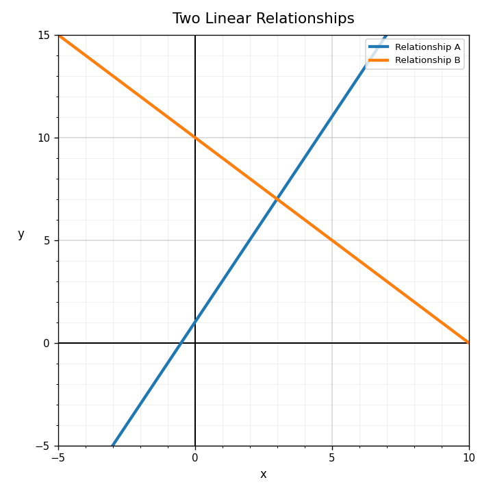

Practice Set 5.1.1
Spiral Plan and DoK Balance
DoK 1-2 emphasis
4 DoK 1, 2 DoK 2, 1 DoK 3, 1 DoK 4
Mostly DoK 1-2
Practice Set 1: This is a section-aligned spiral: 5.1 with 4.1 and 3.1. It is not a previous-section spiral.
Identify the greatest common factor of $12x^2$ and $18x$.
Which expression is in factored form?
- $3x+12$
- $3(x+4)$
- $x^2+7x+10$
- $2x^2+5$
Factor out the greatest common factor.
$$6x^2+12x$$
Use the generic rectangle. Write the total area as a sum and then factor out the greatest common factor.
| Generic Rectangle | |
|---|---|
| $6x^2$ | $12x$ |
| $18x$ | $36$ |
Classify $y=3x-7$ as linear, quadratic, absolute value, or exponential.
Use the graph. Which relationship appears quadratic?

Classify $y=x^2+4x+1$ as linear, quadratic, absolute value, or exponential.
Which family often has a U-shaped graph?
Use the table to decide whether the relationship appears linear or quadratic.
| $x$ | 0 | 1 | 2 | 3 | 4 |
|---|---|---|---|---|---|
| $y$ | 1 | 4 | 9 | 16 | 25 |
Explain one feature that distinguishes a linear graph from an exponential graph.
Compare Relationship A and Relationship C on the graph. How do their growth patterns differ?
Create one equation from two different function families that both pass through $(0,1)$. Explain how the graphs would differ.
Does $(3,7)$ satisfy $y=2x+1$?
What does the intersection point of two lines represent in a system?
Use the graph. Estimate the solution to the system.

What could you add first to eliminate $y$?
$$3x+y=11$$
$$2x-y=4$$